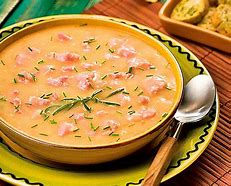

Caldo de Mandioca
Ingredientes
- 2kg de mandioca amarela
- 2 pedaços grandes de bacon picados em cubinhos
- 1 cebola grande triturada ou bem picada
- cebolinha(a gosto)
- 3 caldos de costela
- 2 calabresas grandes picadas em cubinhos
- 3 dentes de alho grandes triturados ou bem picados
- 3 tomates sem semente picados
- 1 pacote de tempero pronto
Modo de Preparo
- Cozinhe a mandioca
- Acrescente no cozimento dois tabletes de caldo de costela
- Dê uma pré-fritada na calabresa junto com o bacon com um pouco de óleo.
- Acrescente junto a ela a cebola e termine de fritar.
- Acrescente o alho e mais 1 caldo de costela
- Bata no liquidificador a mandioca junto com a água que cozinhou.
- Junte a mistura com a fritura no fogo baixo sempre mexendo para que não grude no fundo da panela.
- Acrescente o tomate e a cebolinha (a gosto).
- Acrescente aos poucos os temperos, sempre experimentando para ver se está bom de sal.